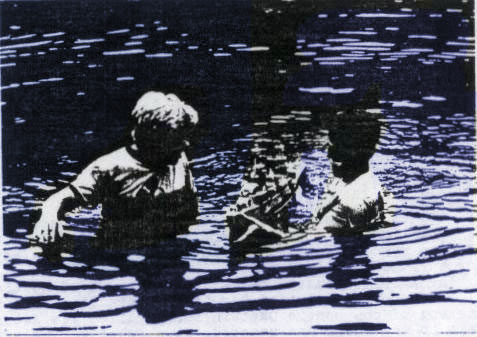

| ||||||
| ||||||
| ||||||
International R/C Warship Combat Club, Inc.
Keeping Ponds Safe since 1978

“In Memory Of a Sailor”
By Kay Poindexter
Sail for a while and see where my winds will take us.
We have sailed and fought on waters before
Not these I know see but waters Dark and tossed
The ship I sailed was gray and now lies lost to sight beneath the Dark tossed sea
Vessel and sea both so unlike these I know sail
Those of you I have left behind on waters dark and tossed,
Should you remember me and feel great loss
Look out to see for I am there
Sailing among the gentle light caped waves
in a vessel golden and clear
You may only catch a gleam of the sea that I know sail
For I heard a voice say “come set Sail with me “
An eternal vessel I now sail.
In Memory of a captain that left us too soon Brian Spychalski
February 2, 1967 -January 11, 1985
Captain: Brian Spychalski
AKA:
Location:
Member since: 1982
Ships
Authorized:
Keel Laid Down:
Commissioned:
USS Pensacola
Decommissioned ships:
Struck:
Articals about Brian
Brian Spychalski ; Rookie Ship 1982
Pensacola with 2 Guns forward , Factory Props,Universals,Throttle and gear reproduction. She ha Lights and the Radio gear in unknown .
Speed is Slow to average and the maneuverability is fair with good Stability
Brian Spychalski and David Schlievert raise the sunken IJN Aoba at 1983 NATS
Brian Spychalski Recovers his USS SALT LAKE CITY at 1983 NATS Brian Placed 19 out of 21 in only 2 Sorties and he placed 19 out of 26 for the year
| ||||||
When the Cry for War you hear
Lord listen closely for my prayers
And send your angels to guard us well
We Captains serving in your fleet so dear,
Protect us from wet Pants and feet.
Give us guidance and the skill,
To pursue our foe and send them deep
We fight for friendship and for fun
Instead of hatred and bloodlust,
for After all it’s just a game
Where good friends are made
But when I hear you call my name
And on five I go as I must,
Permit me to appear first at your gate,
Allow the devil to think I'm late,
Before he realizes his mistake,
Grant me Entrance to your gate,
Assign me to serve in your heavenly fleet
Where I can stand watch from the
Rolling decks of my heavenly vessel
And help you keep our captains safe
As they battle their ships and have some fun
And although this is serious Work
Perhaps I may still have some fun
For the next time your ship glitchs or it goes awry take a moment and wonder why
Look out over the pond with your naked eye
For you might just catch A glimpse of my Ship
Or was it just the sun's reflection
of the golden sky.
Monkey
| ||||||
| ||||||
| ||||||

| ||||||
He was very special to me. He was a unique, one of kind young man. In a lot of ways, he was really just an ordinary good kid. I miss him very much. There is not a day goes by that I don’t think of him. They say the pain goes away but they are absolutely wrong. You just learn to cope with the pain. It is there every single day and it hurts just as much as the day it happened maybe more so. So what you are doing means very much to me. He absolutely loved the hobby and tried so hard to get some involvement in this area. His time here was way too short but he made use of every minute he was here with his love and kindness (except during a battle). We spent many evenings
together working on the ships, talking Naval history, fishing, hunting, playing battle mitten (bad mitten but not for the faint of heart) and ball hockey. We made two trips to Amarillo (It is a 24 hour straight drive from Toledo), Springfield Mo. and Decatur Al. for boat battles. None of these are short trips from Toledo Ohio. We had plenty of time to talk and be friends. The short time we had together was very full and fantastic. The best of times were when we worked on the ships or when we went fishing and never put a line in the water but would sit and just talk about life in general for hours on end. So the loss was especially hard on me because I not only lost my only son but my very best friend. He was just an ordinary kid but a very special kid to me. He would have made any father very proud. I could not ask anymore out of our relation. The ride was short but it was filled with the best times of my life.
Bob Spychalski